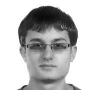

Ondřej Holešovský is a postdoc at Robotic Perception Group at the Czech Institute of Informatics, Robotics and Cybernetics (CIIRC), Czech Technical University in Prague (CTU). He has been employed in the Roboprox project since 2025. Ondřej’s research focuses on interactive perception for industrial robotic manipulators.
Ondřej obtained his bachelor degree in Cybernetics and Robotics from CTU in 2015. He acquired his master degree in the Systems, Control and Robotics study programme at KTH Royal Institute of Technology in Stockholm, Sweden in 2017. Ondřej defended his PhD thesis under the supervision of Prof. Václav Hlaváč at CTU in 2025.
Interactive Robotic Moving Cable Segmentation by Motion Correlation.
Holešovský, O., Škoviera, R., Hlaváč, V. (2025).
IEEE Robotics and Automation Letters, vol. 10, no. 7, pp. 7420-7427, July 2025. DOI, PDF, Code and video, Dataset
Interactive Robotic Perception of Cable-like Deformable Objects
Holešovský, O. (2025).
PhD thesis, CTU, Prague, Czech Republic. DSpace, PDF
MovingCables: Moving Cable Segmentation Method and Dataset.
Holešovský, O., Škoviera, R., Hlaváč, V. (2024).
IEEE Robotics and Automation Letters, vol. 9, no. 8, pp. 6991-6998, Aug. 2024. DOI, PDF, Code and videos, Dataset
Experimental Comparison between Event and Global Shutter Cameras.
Holešovský, O., Škoviera, R., Hlaváč, V., Vítek, R. (2021).
Sensors (Basel, Switzerland), 21. DOI, PDF, Dataset
Practical high-speed motion sensing: event cameras vs. global shutter.
Holešovský, O., Hlaváč, V., Škoviera, R., Vítek, R. (2020).
Proceedings of the Computer Vision Winter Workshop 2020, Rogaška Slatina, Slovenia, 3–5 February 2020. PDF
Compact ConvNets with Ternary Weights and Binary Activations.
Holešovský, O., Maki, A. (2018).
Proceedings of the Computer Vision Winter Workshop 2018, Český Krumlov, Czech Republic, 5–7 February 2018. PDF
Compact convnets with ternary weights and binary activations.
Holešovský, O. (2017).
Master’s thesis, KTH, Stockholm, Sweden. PDF
Face Descriptor Learned by Convolutional Neural Networks.
Holešovský, O. (2015).
Bachelor thesis, CTU, Prague, Czech Republic. PDF